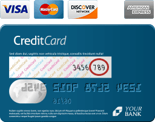

| CVV is an anti-fraud security feature to help verify that you are in possession of your credit card. For Visa/Mastercard, the three-digit CVV number is printed on the signature panel on the back of the card immediately after the card's account number. For American Express, the four-digit CVV number is printed on the front of the card above the card account number. |
| Visa/Mastercard | |
|  | |
| A 3-digit number in reverse italics on the back of your credit card | A 4-digit number on the front, just above your credit card number |